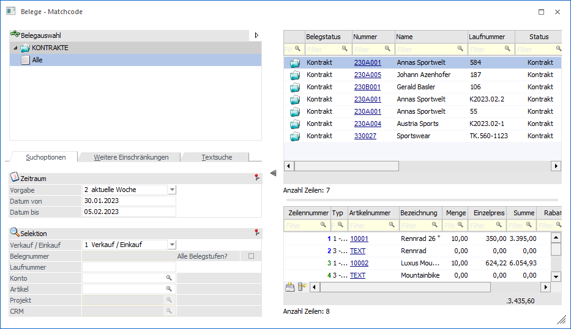

Der Druck des Kontraktes hat Auswirkungen auf mehrere Bereiche:
ü In der Belegtabelle wird ein Beleg
angelegt.
Der erfasste Kontrakt wird in der Belegtabelle gespeichert. Er ist
im Belegmatchcode sichtbar (jedoch nur wenn der Belegmatch im Menüpunkt
"Kontrakte erfassen" oder "Kontrakte abbuchen" aufgerufen wird) und hat den
Bearbeitungscode "Kontrakt".

ü In den Preisen wird ein
Kontraktpreis angelegt
Die Kontraktpreise werden im Preisstamm angezeigt,
können aber nicht bearbeitet werden. Eine Überarbeitung ist nur über die Kontrakterfassung möglich.
ü Beim Belegerfassen (lt.
Einstellungen in den FAKT-Parametern) werden die für den Kontrakt fixierten
Bedingungen berücksichtigt
Der Kontraktpreis und die Kontraktrabatte haben
die höchste Priorität. Andere Preise, die auf Grund der Menge, der
Gruppenzugehörigkeit, des Zeitpunktes, etc. eventuell gültig wären, werden
übersteuert.
Achtung
Die hierarchische Gliederung in der Preisfindung gilt auch dann, wenn ein anderer Preis niedriger wäre, als der Preis, der im Kontrakt verankert ist.